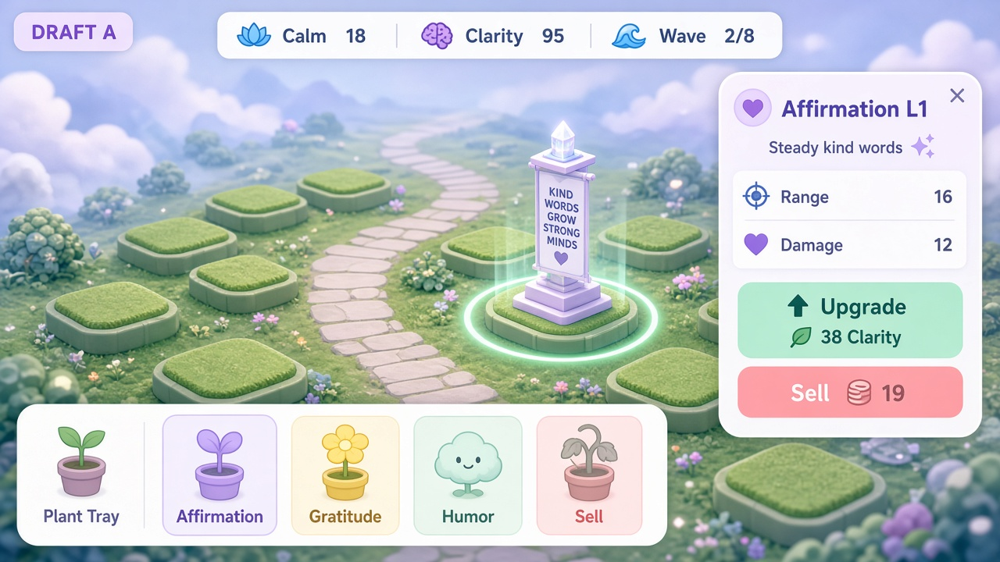

DRAFT A
Selection panel
Tap a planted thought → side/bottom panel with stats + Upgrade + Sell.
- Best for teaching what each thought does
- Prevents accidental upgrades
- Heavier chrome on small phones (use bottom sheet)
Tweak ideas